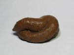

Frontera de la frikipedia
 De: La Frikipedia, la enciclopedia extremadamente seria.
De: La Frikipedia, la enciclopedia extremadamente seria.
HOYGAN ustedes, esta es la frontera de la Frikipedia con la Kiwipedia. Tienes dos opciones:
- Quedarte a este lado de la línea, donde está la mejor enciclopedia del mundo mundial donde decimos la verdad porque somos los más guapos, los más listos y los más mejores.
- Irte para el otro lado de la línea y entrar en esa mierda donde no dicen nada más que sartas de tonterías, te banean por saludar y nos roban artículos para remodelarlos de forma horrible.
Tú decides, pero si vas al otro lado de la línea cuidado, eso es terreno hostil y mugroso, piojoso, zarrapastroso, golfo, golfo cierrabares, hartosopas, cuerpotordo y pregonao, y allí se aberronchan sobre el rocaje vivo.

Cruzar al otro lado de la línea
Autor(es):
- ElInventor
- Dark temptation
- Comentaristainformal
- Harry El del Pote
- Gororo
- AztroCat01
Frikipedia 2005-2016, Licencia
GFDL 1.2 - Extraído por FrikiLeaks